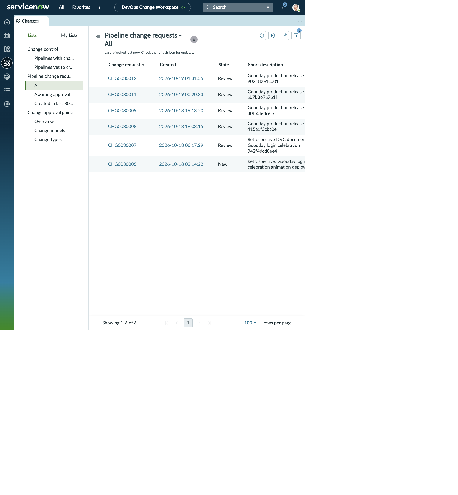
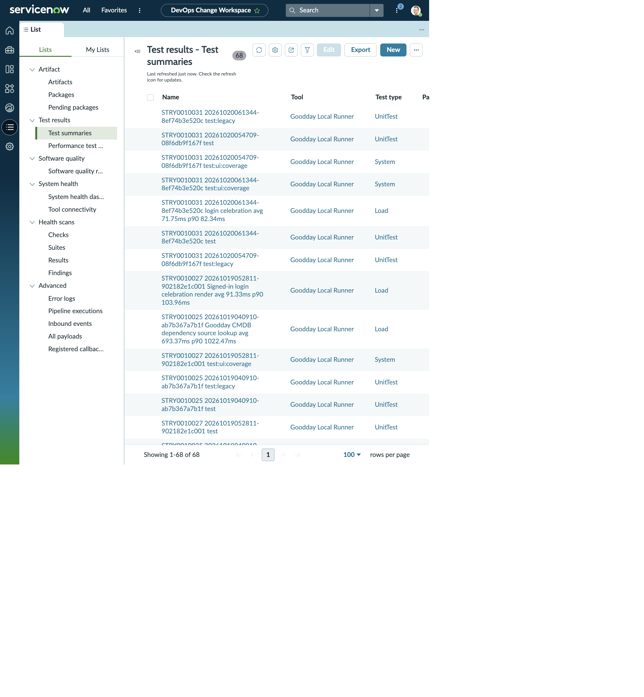
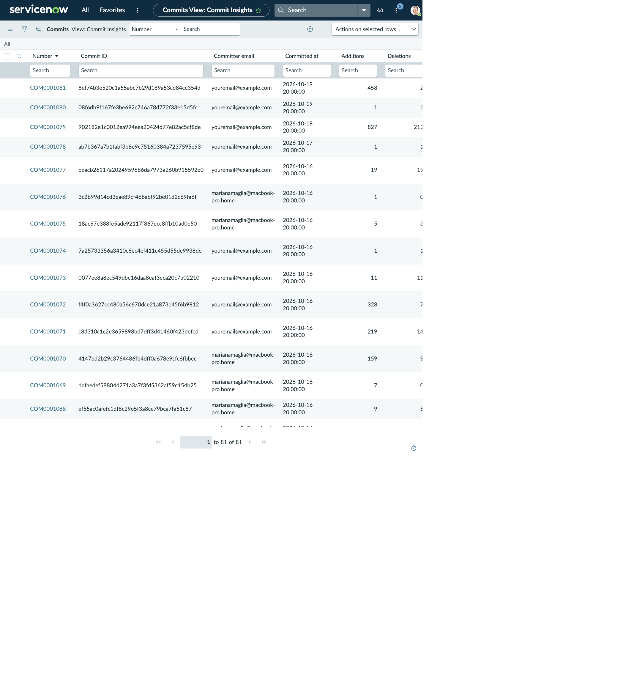

DEVOPS CHANGE WORKSPACE · PIPELINE CHANGE REQUEST
CHG0030012 · Goodday production release
The change record and two requested related lists are transcribed together: four Test Summaries and one Commit. The tab inventory preserves the additional delivery evidence linked from the workspace record.
CHANGE REQUEST RECORD
CHG0030012 · release details
- Number
- CHG0030012
- Model
- DevOps Simplified
- Type
- Normal
- State
- Review
- Category
- DevOps
- Risk
- High
- Impact
- 3 - Low
- On hold
- false
- Short description
- Goodday production release 902182e1c001
- Created
- 2026-10-19 01:31:55
- Application
- Goodday Family Chores
- Package / evidence
- Goodday production release 902182e1c001 evidence package
Description: Production deployment request for 1 commit (ab7b367a7b1f..902182e1c001). DevOps Change Velocity work item: 45276f893bc41f50c5b8f9c643e45ae5. Artifact version: 1.0.0-stry0010027-902182e1c001. Evidence package: Goodday production release 902182e1c001 evidence package. Regular test summaries: 3; performance summaries: 1; software-quality summaries: 1.
Review point: the risk choice and its narrative disagree (High in the field; Low in the analysis). The record is still in Review, so the mismatch is visible before approval.
RELATED-LIST NAVIGATION
Workspace tabs available from More
| Related list | Count shown |
|---|---|
| Test Summaries | 4 |
| Commits | 1 |
| Software Quality Summary | 1 |
| Artifact Versions | 1 |
| Work Items | 1 |
| Pull Requests | (count not shown) |
| Affected CIs / Impacted Services-CIs / Approvers | 1 each |
| Change Tasks / Problems / Incidents Fixed By Change / Incidents Caused By Change | (no count shown) |
RELATED LIST · TEST SUMMARIES (4)
Evidence from build 20261019052811-902182e1c001
| Work item | Summary | Test type | Pass % | Passed | Failed | Blocked | Skipped | Start / finish | Duration (s) |
|---|---|---|---|---|---|---|---|---|---|
| STRY0010027 | Signed-in login celebration render avg 91.33ms p90 103.96ms | Load | 100% | 8 | 0 | 0 | 0 | 2026-10-18 20:00:00 / 2026-10-18 20:00:00 | 2.102 |
| STRY0010027 | test:ui:coverage | System | 100% | 80 | 0 | 0 | 0 | 2026-10-18 20:00:00 / 2026-10-18 20:00:00 | 43.734 |
| STRY0010027 | test | UnitTest | 100% | 143 | 0 | 0 | 0 | 2026-10-18 20:00:00 / 2026-10-18 20:00:00 | 17.143 |
| STRY0010027 | test:legacy | UnitTest | 100% | 180 | 0 | 0 | 0 | 2026-10-18 20:00:00 / 2026-10-18 20:00:00 | 15.963 |
RELATED LIST · COMMITS (1)
COM0001079
- Work item
- Improve dependency map caching and exploration controls
- Commit ID
- 902182e1c0012ea994eea20424d77e82ac5cf8de
- Committer email
- youremail@example.com
- Committed at
- 2026-10-18 20:00:00
- Additions / deletions
- 827 / 213
- Commit reverted
- (empty)
- Commit URL
- (empty)
- Change package
- Goodday production release 902182e1c001 evidence package
WORKSPACE VISUALS
workspace change, tests, and commits
See the working view in context. The record details above remain available here as readable HTML.


